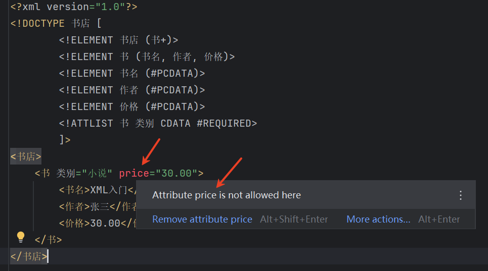

DTD（Document Type Definition）是XML文档的一种模式定义方式，它定义了XML文档的结构和合法元素。DTD可以确保XML文档遵循预定义的结构和规则。mybatis就是用DTD继续约束的。
<?xml version="1.0"?>
<!DOCTYPE 书店 [
<!ELEMENT 书店 (书+)>
<!ELEMENT 书 (书名, 作者, 价格)>
<!ELEMENT 书名 (#PCDATA)>
<!ELEMENT 作者 (#PCDATA)>
<!ELEMENT 价格 (#PCDATA)>
<!ATTLIST 书 类别 CDATA #REQUIRED>
]>
<书店>
<书 类别="小说">
<书名>XML入门</书名>
<作者>张三</作者>
<价格>30.00</价格>
</书>
</书店>
在 IDEA 工具中可以校验 XML 文件是否符合 DTD 语法，不符合会报错：

books.dtd文件：
<!ELEMENT 书店 (书+)>
<!ELEMENT 书 (书名, 作者, 价格)>
<!ELEMENT 书名 (#PCDATA)>
<!ELEMENT 作者 (#PCDATA)>
<!ELEMENT 价格 (#PCDATA)>
<!ATTLIST 书
类别 CDATA #REQUIRED
库存 (有|无) "有"
>
引用外部DTD的XML文件：
<?xml version="1.0"?>
<!DOCTYPE 书店 SYSTEM "books.dtd">
<书店>
<书 类别="科技" 库存="有">
<书名>XML高级编程</书名>
<作者>李四</作者>
<价格>45.00</价格>
</书>
</书店>
DTD虽然简单易用，但在现代XML开发中，XML Schema (XSD)因其更强大的功能而更为常用。
XSD（XML Schema Definition）是比DTD更强大、更灵活的XML模式定义语言，它使用XML语法来描述XML文档的结构和约束。spring，springboot都是用xsd进行约束的。
<?xml version="1.0"?>
<xs:schema xmlns:xs="http://www.w3.org/2001/XMLSchema">
<!-- 定义根元素"书店" -->
<xs:element name="书店">
<xs:complexType>
<xs:sequence>
<!-- 书店包含一个或多个"书"元素 -->
<xs:element name="书" maxOccurs="unbounded">
<xs:complexType>
<xs:sequence>
<!-- 定义子元素及其类型 -->
<xs:element name="书名" type="xs:string"/>
<xs:element name="作者" type="xs:string"/>
<xs:element name="价格" type="xs:decimal"/>
<xs:element name="出版日期" type="xs:date" minOccurs="0"/>
</xs:sequence>
<!-- 定义属性 -->
<xs:attribute name="类别" use="required">
<xs:simpleType>
<xs:restriction base="xs:string">
<xs:enumeration value="小说"/>
<xs:enumeration value="科技"/>
<xs:enumeration value="历史"/>
</xs:restriction>
</xs:simpleType>
</xs:attribute>
<xs:attribute name="库存" type="xs:boolean" default="true"/>
</xs:complexType>
</xs:element>
</xs:sequence>
</xs:complexType>
</xs:element>
</xs:schema>
<?xml version="1.0"?>
<书店 xmlns:xsi="http://www.w3.org/2001/XMLSchema-instance"
xsi:noNamespaceSchemaLocation="books.xsd">
<书 类别="科技" 库存="true">
<书名>XML高级编程</书名>
<作者>李四</作者>
<价格>45.00</价格>
<出版日期>2023-05-15</出版日期>
</书>
<书 类别="小说">
<书名>XML奇幻之旅</书名>
<作者>王五</作者>
<价格>32.50</价格>
</书>
</书店>
没有命名空间时的冲突：
<文档>
<标题>公司文件</标题>
<正文>
<标题>这是正文标题</标题> <!-- 两个"标题"元素含义不同 -->
</正文>
</文档>
使用命名空间解决冲突：
<文档 xmlns:doc="http://example.com/document"
xmlns:body="http://example.com/body">
<doc:标题>公司文件</doc:标题>
<doc:正文>
<body:标题>这是正文标题</body:标题> <!-- 现在可以区分了 -->
</doc:正文>
</文档>
minOccurs：最少出现次数（默认1）maxOccurs：最多出现次数（默认1，"unbounded"表示无限）xs:string：字符串xs:decimal：十进制数xs:integer：整数xs:boolean：布尔值xs:date：日期xs:time：时间XSD比DTD功能强大得多，是现代XML应用开发中首选的模式定义方式。